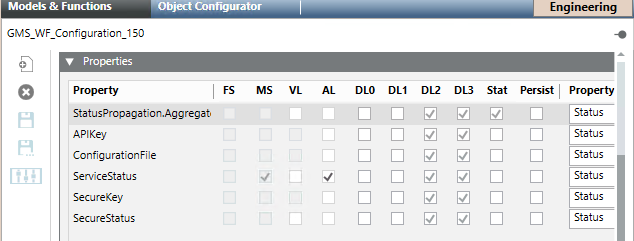
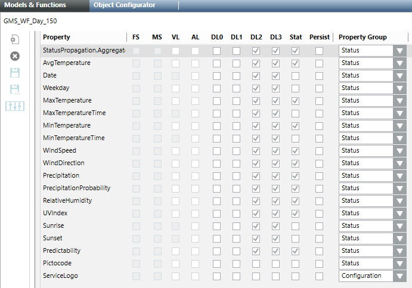
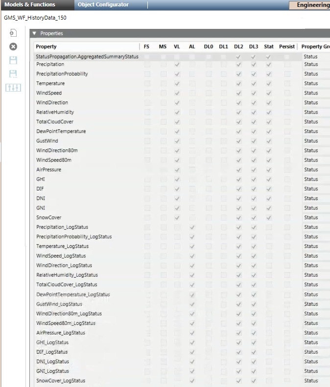
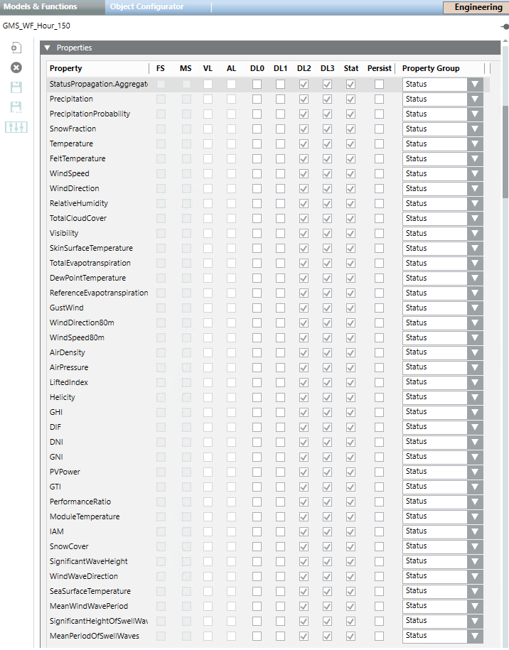
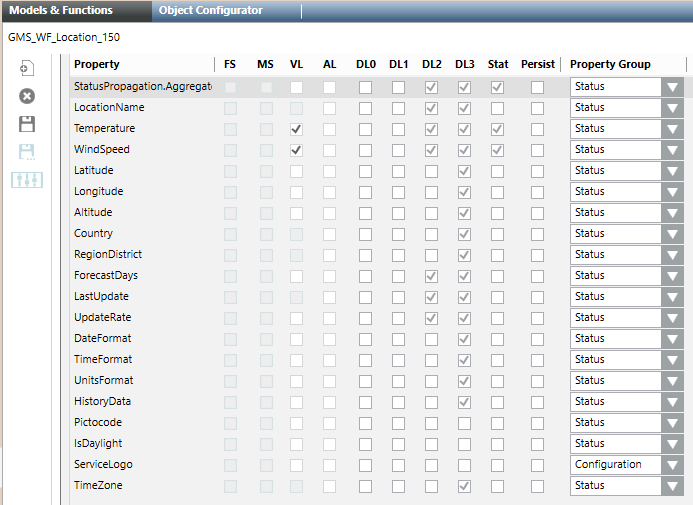
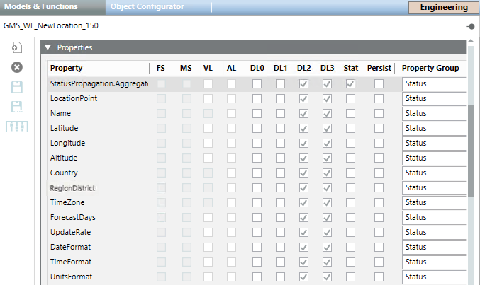

Weather Forecast Object Models
The following object models are included in the Building Automation library installed with the Weather Forecast extension common library.
GMS_WF_Configuration_150 | |
 | |
Property | Description |
APIKey | Code that allows making a certain number of queries per day or per month to use the weather forecast service. Note that the asterisk next to the property indicates that the API key was already set. The Change command allows saving the API key entered. |
ConfigurationFIle | After the adapter parameters are configured, both the adapter and Desigo CC can be restarted without losing the adapter configuration, which is saved in the file with extension .conf. This file is encrypted and cannot be read or edited. Once configured, the API key and secure key stored in this file are automatically retrieved when the adapter is stopped and restarted. Note that when the adapter is stopped it is possible to delete the configuration file. When the adapter is restarted, the configuration file is recreated when you configure the API key code and the secure key code. |
ServiceStatus | Diagnostic information relating to the status of the service between the adapter and the weather forecast service which can be one of the following states:
|
SecureKey | Code associated to the API key to secure (encrypt) the communication between the adapter and the weather forecast service. While the communication is encrypted with the https protocol, the secure key encrypts the queries to the weather forecast service. The signature is sent at the end of each query to the weather forecast service. Note that the asterisks next to the property indicates that the secure key was already set. The Change command allows saving the secure key entered. |
SecureStatus | One of the following states:
|
GMS_WF_Day_150 | |
 | |
Property | Description |
AvgTemperature | Average temperature. It is expressed in Celsius (°C) or Fahrenheit (°F) degrees. |
Date | Date of the selected day. |
Weekday | Day of the week. |
MaxTemperature | Maximum temperature forecast at the time indicated by the property Max Temperature Time. |
MaxTemperatureTime | Time relevant to the maximum temperature forecast. |
MinTemperature | Minimum temperature forecast at the time indicated by the property Min Temperature Time. |
MinTemperatureTime | Time relevant to the minimum temperature forecast. |
WindSpeed | Rate at which air is moving horizontally. It is expressed in meter per second (m/s). |
WindDirection | Direction from which the wind blows. It is expressed in degree (°). |
Precipitation | Deposition of water to the Earth's surface, in form of rain, snow, ice or hail. All precipitation quantities are expressed in millimetres (mm) of liquid water. |
PrecipitationProbability | Likelihood with which a precipitation amount of more than 0.2 mm of rain occurs within the time window of the last one, three or 24 hours, respectively. It is expressed as a percentage (%). |
RelativeHumidity | How saturated the air is with moisture (expressed as a percentage (%)). |
UVIndex | The ultraviolet index (UV index) is an international standard measurement of the strengths of the ultraviolet radiation from the sun. The purpose is to help people to effectively protect themselves from UV light. The UV index value always refers to the highest possible value that can be achieved at midday. It is expressed in index numbers from 1 to 16. NOTE: If this property is not applicable or its value is unavailable, |
Sunrise | Time in the morning when the sun appears. |
Sunset | Time in the evening when the sun disappears. |
Predictability | Estimated certainty of Meteoblue forecast. It is expressed as percentage from 0% (worst) to 100% (perfect). |
Pictocode | Codes that correspond to pictograms that graphically summarizes the daily weather conditions. 17 iday pictocodes are used. For details on picto codes, see Picto Icons in Weather Forecast Graphic Templates. |
ServiceLogo | Logo available in the graphic template TEM_WF_Day_None_001_150. |
GMS_WF_HistoryData_150 | |
 | |
Property | Description |
Precipitation | If the relevant log status is enabled, at each hour, it indicates the forecast value for that hour. |
PrecipitationProbability | If the relevant log status is enabled, at each hour, it indicates the forecast value for that hour. |
Temperature | If the relevant log status is enabled, at each hour, it indicates the forecast value for that hour. |
WindSpeed | If the relevant log status is enabled, at each hour, it indicates the forecast value for that hour. |
WindDirection | If the relevant log status is enabled, at each hour, it indicates the forecast value for that hour. |
TotalCloudCover | If the relevant log status is enabled, at each hour, it indicates the forecast value for that hour. |
RelativeHumidity | If the relevant log status is enabled, at each hour, it indicates the forecast value for that hour. |
DewPointTemperature | If the relevant log status is enabled, at each hour, it indicates the forecast value for that hour. |
GustWind | If the relevant log status is enabled, at each hour, it indicates the forecast value for that hour. |
WindDirection80m | If the relevant log status is enabled, at each hour, it indicates the forecast value for that hour. |
WindSpeed80m | If the relevant log status is enabled, at each hour, it indicates the forecast value for that hour. |
AirPressure | If the relevant log status is enabled, at each hour, it indicates the forecast value for that hour. |
GHI | Also referred as Global Horizontal Radiation. If the relevant log status is enabled, at each hour, it indicates the forecast value for that hour. |
DIF | Also referred as Diffuse Horizontal Irradiance. If the relevant log status is enabled, at each hour, it indicates the forecast value for that hour. |
DNI | Also referred as Direct Normal Irradiance. If the relevant log status is enabled, at each hour, it indicates the forecast value for that hour. |
GNI | Also referred as Global Normalized Irradiance. If the relevant log status is enabled, at each hour, it indicates the forecast value for that hour. |
SnowCover | If the relevant log status is enabled, at each hour, it indicates the forecast value for that hour. |
Precipitation_LogStatus | One of the following states (and available commands):
|
PrecipitationProbability_LogStatus | One of the following states (and available commands):
|
Temperature_LogStatus | One of the following states (and available commands):
|
WindSpeed_LogStatus | One of the following states (and available commands):
|
WindDirection_LogStatus | One of the following states (and available commands):
|
RelativeHumidity_LogStatus | One of the following states (and available commands):
|
TotalCloudCover_LogStatus | One of the following states (and available commands):
|
DewPointTemperature_LogStatus | One of the following states (and available commands):
|
GustWind_LogStatus | One of the following states (and available commands):
|
WindDirection80m_LogStatus | One of the following states (and available commands):
|
WindSpeed80m_LogStatus | One of the following states (and available commands):
|
AirPressure_LogStatus | One of the following states (and available commands):
|
GHI_LogStatus | One of the following states (and available commands):
|
DIF_LogStatus | One of the following states (and available commands):
|
DNI_LogStatus | One of the following states (and available commands):
|
GNI_LogStatus | One of the following states (and available commands):
|
SnowCover_LogStatus | One of the following states (and available commands):
|
GMS_WF_Hour_150 | |
 | |
Property | Description |
Precipitation | Deposition of water to the Earth's surface, in form of rain, snow, ice or hail. All precipitation quantities are expressed in millimetres (mm) of liquid water. |
PrecipitationProbability | Likelihood with which a precipitation amount of more than 0.2 mm of rain occurs within the time window of the last one, three or 24 hours, respectively. It is expressed as a percentage (%). |
SnowFraction | Precipitation that falls as snow. It is expressed as a percentage (%). |
Temperature | Current temperature. It is expressed in Celsius (°C) or Fahrenheit (°F) degrees. |
FeltTemperature | Temperature that people experience. It is expressed in Celsius (°C) or Fahrenheit (°F) degrees. |
WindSpeed | Rate at which air is moving horizontally. It is expressed in meter per second (m/s). |
WindDirection | Direction from which the wind blows. It is expressed in degree (°). |
RelativeHumidity | How saturated the air is with moisture. It is expressed as a percentage (%). |
TotalCloudCover | Cloud cover. It is expressed as a percentage (%). |
Visibility | Distance (in metres (m)) at which an object can be clearly seen. |
SkinSurfaceTemperature | Measure of the surface temperature. It is expressed in Celsius (°C) or Fahrenheit (°F) degrees. |
TotalEvapotranspiration | Sum of evaporation (soils, lakes, seas) and transpiration (plants). It is expressed in millimeters (mm). |
DewPointTemperature | Point at which dew starts to form on solid surfaces. The condensed water is expressed in Celsius (°C) or Fahrenheit (°F) degrees. |
ReferenceEvapotranspiration | Reference crop evapotranspiration. It is expressed in millimeters (mm). |
GustWind | Indicates how turbulent the wind is. It is the speed that can be expected for short periods of time, which can be much higher than the wind speed, which is an hourly mean wind speed. It is expressed in meter per second (m/s). |
WindDirection80m | Direction from which the wind blows at 80 meters above ground. It is expressed in degree (°). |
WindSpeed80m | Rate at which air is moving horizontally at 80 meters above ground. It is expressed in meter per second (m/s). |
AirDensity | Air density decreases rapidly with altitude and also with increasing temperature and humidity.It is expressed in kilogram per cubic metre (kg/m3). |
AirPressure | Pressure od the air. It is expressed in hectopascal (hPa) |
LiftedIndex | Measure of atmospheric instability. It is expressed in joule per kilogram (J/kg). |
Helicity | The potential for the helical flow to evolve. It can be useful to identify thunderstorm types. It is expressed in meters square per second squared (m2/s2). |
GHI | Also referred as Global Horizontal Irradiance. Amount of total short-wave radiation energy reaching the horizontal Earth surface. The unit of irradiance is watt per square meter (W/m2). |
DIF | Also referred as Diffuse Horizontal Irradiance. Diffuse radiation reaching the horizontal Earth surface. The unit of irradiance is watt per square meter (W/m2). |
DNI | Also referred as Direct Normal Irradiance. Direct irradiance on surfaces perpendicular to the sun rays. The unit of irradiance is watt per square meter (W/m2). |
GNI | Also referred as Global Normal Irradiance (GNI). Global irradiation on surfaces perpendicular to the sun rays. |
PVPower | Photovoltaic power generation is the generated electricity power output of a specific PV system. It is expressed in kilowatt (kW) or kilowatt per hour (kW/h). |
GTI | Also referred as Global Tilted Irradiation. Global irradiance on a defined surface inclination, which is usually a photovoltaic (PV) module. |
PerformanceRatio | Efficiency of a power plant. It varies significantly within different weather conditions, and it is depending on surface reflectance, module temperature, spectral sensitivity, and snow coverage. It is expressed as a percentage (%). |
ModuleTemperature | Temperature of the solar cell. It is expressed in Celsius (°C) degrees. |
IAM | Also referred as Incidence Angle Modifier. Share of radiation that is available for power generation (the glass surface of a PV system reflects the incoming radiation depending on the inclination angle). It is expressed as a percentage (%). |
SnowCover | Height of snow on a horizontal surface. Based on the snow height the PV power output is adjusted. It is expressed in millimeters (mm). |
SignificantWaveHeight | Average of the largest 33% of the waves over a recording time period. It corresponds with the wave height, a skilled observer would determine when looking at the sea filled with waves of different heights. The significant wave height are average numbers, therefore, some individual waves are much higher. The significant wave height is indicated in meters (m). |
WindWaveDirection | Wind waves are caused by the local wind. Wind wave direction is the direction where the wind wave comes from. The same convention as for the wind direction (°) is used. Wind waves are only generated if local winds are sufficiently strong. |
SeaSurfaceTemperature | Mean temperature of the ocean in the upper few meters. It is indicated in Celsius (°C) degrees. |
MeanWindWavePeriod | Also referred as Wind Wave Mean Period. Average wind wave time period (in seconds) is the time between waves of the locally generated wind sea. Wind waves are only generated if local winds are sufficiently strong. |
SignificantHeightofSwellWaves | The significant height of swell waves is the average of the largest 33% of the swell waves over a recording time period. The peak wind direction is indicated in degrees (°). |
MeanPeriodofSwellWaves | Mean period of the swell in seconds. The mean period is critical surf knowledge because it ultimately measures the quality of the upcoming surf session. |

The Operation tab might appear empty if a daily hour is selected and precedes the last modification to weather forecasts (For example, the Operation tab will display empty for an hour previous to the creation date of a location. For the same hour -9999 will display for all the properties in the Extended Operation tab).
GMS_WF_Location_150 | |
 | |
Property | Description |
LocationName | Name of the location for which the weather forecasts are retrieved. |
Temperature | Location temperature. |
WindSpeed | Rate at which air is moving horizontally. It is expressed in meter per second (m/s). |
Latitude | Latitude of the location for which the weather forecasts must be retrieved. |
Longitude | Longitude of the location for which the weather forecasts must be retrieved. |
Altitude | Altitude of the location for which the weather forecasts must be retrieved. |
Country | Country of the location. |
RegionDistrict | State, region, or district of the location. |
ForecastDays | How many days the weather will be predicted. Possible values are:
Default is |
LastUpdate | Indicates the last time the location forecasts were updated. The Update command allows updating the value. |
UpdateRate | How often weather forecasts will be updated for a location. Possible values are:
Default is The Change command allows saving the changes. |
DateFormat | Date formatting to be used by the adapter to display the date. Possible values are:
Default is The Change command allows saving the changes. |
TimeFormat | Time formatting to be used by the adapter to display the time. Possible values are:
Default is The Change command allows saving the changes. |
UnitsFormat | Units formatting to be used by the adapter to display the units of measurement. Possible values are:
Default is The Change command allows saving the changes. |
HistoryData | One of the following states:
The Activate command allows activating history data. |
Pictocode | Codes that correspond to pictograms that graphically summarize the location weather conditions. 17 iday pictocodes are used. For details on picto codes, see Picto Icons in Weather Forecast Graphic Templates. |
IsDaylight | Whether daylight occurs. |
ServiceLogo | Logo available in the graphic template TEM_WF_Location_001_150. |
TimeZone | Location time zone. |
GMS_WF_New_Location_150 | |
 | |
Property | Description |
LocationPoint | This property is always blank. The Create command allows creating a new location. The Refresh command allows refreshing location data. |
Name | Name of the location for which the weather forecasts must be retrieved. The Write command allows saving the name entered. The Get command allows retrieving the data for the entered location. |
Latitude | Latitude of the location for which the weather forecasts must be retrieved. The Write command allows saving the latitude value entered manually. |
Longitude | Longitude of the location for which the weather forecasts must be retrieved. The Write command allows saving the longitude value entered manually. |
Altitude | Altitude of the location for which the weather forecasts must be retrieved. The Write command allows saving the longitude value entered manually. |
Country | Country of the location. |
RegionDistrict | State, region, or district of the location. |
TimeZone | Location time zone. |
ForecastDays | How many days the weather will be predicted ( The Change command allows saving the changes. |
Update Rate | How often weather forecasts will be updated for a location. Possible values are:
Default is The Change command allows saving the changes. |
DateFormat | Date formatting to be used by the adapter to display the date. Possible values are:
Default is The Change command allows saving the changes. |
TimeFormat | Time formatting to be used by the adapter to display the time. Possible values are:
Default is The Change command allows saving the changes. |
UnitsFormat | Units formatting to be used by the adapter to display the units of measurement. Possible values are:
Default is The Change command allows saving the changes. |